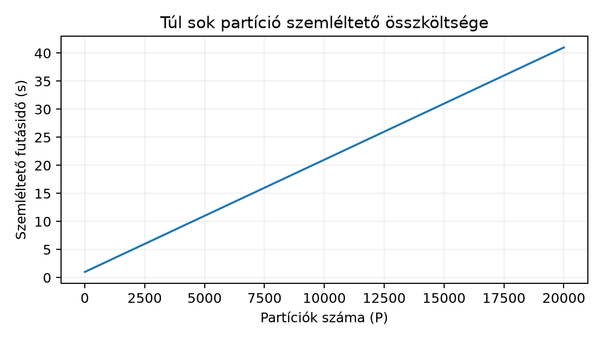

Egy elemző csapat a Northstar orders.csv állományán
szeretné kiszámolni a teljes kosárösszeget és a szegmensenkénti
összeget. Az állomány kicsi, de a csapat olyan számítást készít elő,
amelyet később több fájlra, illetve RAM-nál nagyobb adatra is futtatni
szeretne. A megfigyelési egység egy rendelés (order_id). A
bemenet a lab/data/orders.csv; a cél annak megértése, hogy
a Dask mikor tud partíción belül dolgozni, és mikor kell partíciók
közötti adatmozgatás, azaz shuffle. Előzetes becslésként az
összeg (sum) partíciónkénti részösszegekből előállítható,
ezért költsége nagyjából a beolvasott sorok számával arányos; a
csoportos összeg viszont kulcs szerinti átrendezést igényelhet.
Ez az alfejezet a bővítő tanulási úthoz tartozik. A labor
alapértelmezett pyproject.toml-ja nem tartalmazza a Daskot,
ezért ha a kódot futtatni szeretnéd, előbb külön opcionális környezetben
telepítsd a dask[dataframe] extrát, és őrizd meg a lockot
az uv projekt és ténylegesen rögzített
függőségek alfejezetben tanult módon. A példa helyi CPU-n, külső
szolgáltatás nélkül futtatható. A könyvgenerálás ebben a módban nem
futtat kódot, ezért a kimeneteket „elméletileg várt” jelzővel adjuk meg;
a valódi ellenőrzés a helyi futás után a kontroll-assertben
történik.
A Dask gyűjtemények, például a Dask DataFrame, lusta task
graph-ot (lazy task graph) építenek. A gráf csúcsai
feladatok (task), élei pedig függőségek: egy task kimenete egy
másik task bemenete. Az alábbi egyszerűsített gráf egy kétrészes
basket_minor összegzést ír le:
read[csv, 0] --> partial_sum[0] --\
--> total = add(partial_sum[0], partial_sum[1])
read[csv, 1] --> partial_sum[1] --/Amíg nem hívod a compute() metódust, addig csak ez a
gráf létezik. A Nagyobb mint RAM: előbb
adatfolyam alfejezetben megismert chunk és projection itt is
megjelenik: a CSV-blokkokból Dask-partíciók lesznek, és a vetített
oszlopokon kívüli adatot jobb nem behúzni. A partition a
DataFrame egymástól függetlenül feldolgozható szelete: minden partíció
egy pandas DataFrame, amelyet egy-egy task olvas vagy állít elő.
Partícióméretként hüvelykujjszabály szerint néhány tíz–néhány száz MiB
szokott észszerű lenni, de ez a konkrét munkamenettől függ; a kis
tanulófájlra kényszerből mesterséges
repartition(npartitions=4) lépést alkalmazunk.
A gráfot a scheduler ütemezi. Helyi gépen az alapértelmezett
szálalapú (threaded) scheduler egy folyamatban futtat taskokat;
ez sok pandas–NumPy műveletnél működik, de a Thread,
process és könyvtári szálak alfejezetben tárgyalt GIL- és
oversubscription-kérdés itt is érvényes. Nagyobb helyi munkához
használható process-alapú vagy distributed scheduler, amely
már külön munkásokat és diagnosztikai felületet ad. A
compute() a gráf kiértékelésének és az eredmény
pandas/NumPy objektummá alakításának pillanata; ekkor a közbülső gráf a
memóriában tartott végeredmény után felszabadulhat.
A persist() ezzel szemben a gráfot kiértékeli, de a
Dask-gyűjteményt megtartja a memóriában, hogy több későbbi
compute() újrahasználhassa ugyanazt a közbülső eredményt.
Ha ugyanazt a beolvasott és újrapartícionált DataFrame-et többféle
aggregátumhoz használod, a base = ddf.persist() utáni
számítások elkerülhetik a beolvasás ismétlését, cserébe viszont a base
partíciói memóriát foglalnak.
A partíciók közötti műveletköltség matematikailag azon múlik, hogy a célaggregátum előáll-e részeredmények kombinációjából. Legyen a teljes adathalmaz (D) felbontva (P) diszjunkt partícióra: (D=D_1\sqcup\dots\sqcup D_P). Az (x) mérőszám esetén vezessük be a (p)-edik partícióra:
[ s_p=\sum_{x\in D_p}x,\qquad n_p=|D_p|,\qquad q_p=\sum_{x\in D_p}x^2. ]
Az (x) érték itt az EUR minor unit, tehát (s_p) és (q_p) mértékegysége rendre minor unit, illetve minor unit a négyzeten; (n_p) dimenzió nélküli darabszám. A teljes összeg, darabszám és átlag:
[ s=\sum_{p=1}^P s_p,\qquad n=\sum_{p=1}^P n_p,\qquad \bar{x}=\frac{s}{n}. ]
Az átlag tehát két összegezhető részaggregátum hányadosa. A szóráshoz az (s_p), (n_p), (q_p) hármas is elegendő:
[ S2=\frac{1}{n-1}\left(q-\frac{s2}{n}\right), ]
ahol (q=\sum_p q_p). Numerikusan ez a képlet nagy értékeknél kivonási kioltásra lehet érzékeny; komoly mérési célra használj stabil Welford-féle frissítést, de a szerkezet akkor is additív marad.
A medián, kvantilis, módusz és a distinct count ezzel szemben nem összegezhető pusztán partíciónkénti részértékekből. Kézzel ellenőrizhető ellenpélda: legyen (D_1=[1,10,7]) és (D_2=[3,4,2]). Az összegek (18) és (9), a teljes összeg (27), a darabszám (3+3=6), az átlag (27/6=4{,}5). A partícionkénti mediánok (7) és (3), ezek átlaga (5{,}0), a teljes rendezett sorozat ([1,2,3,4,7,10]) mediánja viszont ((3+4)/2=3{,}5). A részmediánok átlaga tehát nem a teljes medián.
A Dask az ilyen aggregátumokat általában a kulcs vagy a rendezés
szerinti shuffle segítségével tudja kiszámolni, vagy közelítő
algoritmussal. A sum, count, min,
max redukálható partíción belül és fölött is. A
mean Dask szinten a sum és count
hányadosa. A median default módon rendezést és partíciók
közötti adatmozgatást igényelhet.
A példa először a kis Northstar-fájlt olvassa be, mesterségesen négy
partícióra osztja, majd pandas-kontrollal hasonlítja össze. A
df és a ddf shape/típus-invariánsát is
ellenőrizzük.
from pathlib import Path
import pandas as pd
import dask.dataframe as dd
ORDERS = Path("lab/data/orders.csv")
# Teljes, kis méretű kontrollbeolvasás.
pdf = pd.read_csv(ORDERS)
# Lusta Dask-gráf: blokkrészletes olvasás, majd 4 partíció.
# A blocksize csak szemléltető egység; a kis fájlon a Dask overhead számottevő.
ddf = dd.read_csv(ORDERS, blocksize=256_000).repartition(npartitions=4)
print("partíciók:", ddf.npartitions) # elméletileg várt: 4
# Partíción belüli részösszeg és részcount, majd additív összegzés.
meta = pd.DataFrame({"partial_sum": pd.Series(dtype="int64"),
"partial_n": pd.Series(dtype="int64")})
partial = (
ddf["basket_minor"]
.map_partitions(
lambda s: pd.DataFrame(
{"partial_sum": [s.sum()], "partial_n": [s.count()]}
),
meta=meta,
)
.compute()
)
print(partial.shape) # elméletileg várt: (4, 2), minden partícióhoz egy sor
dask_sum = partial["partial_sum"].sum()
dask_count = partial["partial_n"].sum()
dask_mean = dask_sum / dask_count
print("sum:", dask_sum, "count:", dask_count, "mean:", dask_mean)
# Kézi/pandas kontroll, toleranciával.
assert abs(dask_sum - pdf["basket_minor"].sum()) < 1e-6
assert dask_count == len(pdf)
assert abs(dask_mean - pdf["basket_minor"].mean()) < 1e-6
print("pandas-kontroll: OK")
# Shuffle-t igénylő csoportos aggregátum.
by_segment = (
ddf.groupby("segment")["basket_minor"]
.agg(["sum", "count"])
.compute()
.sort_index()
)
print(by_segment)
ground = pdf.groupby("segment")["basket_minor"].agg(["sum", "count"])
pd.testing.assert_frame_equal(by_segment, ground, check_dtype=False)
print("csoportos kontroll: OK")A by_segment soronként egy segment értéket
ad, oszlopai sum és count. Az output pontos
számai a helyi lab aktuális seedjéből adódnak; a kódot még nem
ellenőrizte automatizált teszt, ezért itt nem közlünk „mért” táblázatot.
A felhasználónak a print után a pandas-kontroll a tényleges
ellenőrzés.
A groupby("segment") aggregációt a Dask partíción belüli
részösszegekkel és ezek összefésülésével is elvégezheti; nem
szükségszerű a teljes sorszintű shuffle. Általánosabb
groupby-transzformációknál vagy bizonyos joinoknál viszont
kulcs szerinti adatátrendezésre lehet szükség. Kis adaton az eredmény
gyors lesz, de a művelet jellege élesen eltér a
map_partitions-tól: az utóbbi garantáltan nem kever
partíciók között.
A partial DataFrame shape-je (4, 2): a négy
partíció mindegyike egy-egy partial_sum és
partial_n sort adott. A dask_sum értéke a
basket_minor oszlop teljes összege, a
dask_mean ennek és a sorok számának hányadosa. A
pandas-kontroll ellenőrzi, hogy a Dask partíciós redukció ugyanoda jut,
mint az egyben beolvasott adat; toleranciát azért érdemes adni, mert bár
a basket_minor egész minor unit, a későbbi osztás és
esetleges float-dtype ilyen apró eltérést hozhat.
A csoportos tábla invariánsa: a business és
consumer összegének külön-külön meg kell egyeznie a pandas
groupby eredményével, és mindkét csoport count
értéke pozitív. A groupby eredménye önmagában nem mutatja a
shuffle tényét; a shuffle-t a task gráf belső szerkezete okozza. A
persist ebben a példában csak akkor éri meg, ha a
beolvasott ddf-re több külön groupby vagy
merge is épül; itt egyszeri kontrollhoz felesleges.
A Dask lazy gráf nem jelenti azt, hogy bármely transzformáció konstans memóriával értékelhető ki: shuffle és join esetén adatmozgatási költség keletkezhet.
Értelmezés. Az alábbi mutatók közül melyek
állnak elő kizárólag partíción belüli részaggregátumokból:
count, mean, median,
min, count(distinct product_id)? Mindegyikhez
indokold meg a választ.
Megvalósítás. Hozz létre egy hat soros pandas
DataFrame-et x = [1, 10, 7, 3, 4, 2] értékekkel, majd
dd.from_pandas(..., npartitions=2) segítségével két
partíciót. Olvasd ki a két partíciót to_delayed()
segítségével, számold ki a partíciónkénti összeget és mediánt, majd a
teljes összeget és teljes mediánt. Ellenőrizd, hogy a részmediánok
átlaga nem egyenlő a teljes mediánnal.
Hibadiagnózis. Egy kolléga egy 64 MiB-os CSV-t
blocksize=4096 értékkel olvas be, ezért több ezer apró
partíciója lesz. A sum() nagyon lassú. Mi a hiba, és milyen
blocksize, illetve
repartition(partition_size=...) értékre cserélnéd? A
válaszban ne állíts mért futásidőt, hanem a task overhead és a hasznos
munka arányáról érvelj.
Megváltozott feltétel. A Northstar
order_items.csv fájlból rendelésenkénti
line_total_minor összeget akarsz készíteni, majd
összekapcsolni az orders basket_minor
oszlopával. Melyik lépés igényel shuffle-t: a rendelésenkénti összegzés,
a join, vagy mindkettő? Írj Dask-vázlatot, amely az egyezőséget
ellenőrzi, és indokold a sorazonosító szemcsézettségét a Join-kardinalitás és duplázódó célváltozó
alfejezetben tanult join-kardinalitással.
Persist transzfer. Az 1. feladatban szereplő
felhasználó egymás után hívja meg ugyanazon ddf-re a
sum() és a count() compute()-ot.
Milyen ismétlődő munkát végez a scheduler? Hogyan kerülhető el
persist() segítségével, és milyen memóriaköltség lép
fel?
A count, mean, min additív
jellegű. A mean a sum és count
hányadosa, ezért a két összegezhető részletből áll elő; a
min a partíciónkénti minimumok minimuma. A
median nem ilyen: rendezés kell, amint a 2. feladat
mutatja. A count(distinct product_id) azért nem additív,
mert ugyanaz a product_id több partícióban is előfordulhat,
így a részleges egyedi számok összege felülszámolhat; globális egyedi
halmaz kell.
Egy lehetséges megoldás:
import pandas as pd
import dask.dataframe as dd
pdf = pd.DataFrame({"x": [1, 10, 7, 3, 4, 2]})
ddf = dd.from_pandas(pdf, npartitions=2)
parts = ddf.to_delayed()
part_frames = [p.compute() for p in parts]
print([list(f["x"]) for f in part_frames]) # elméletileg [[1,10,7],[3,4,2]]
partial_sums = [f["x"].sum() for f in part_frames]
partial_medians = [f["x"].median() for f in part_frames]
print(partial_sums, partial_medians) # [18, 9], [7.0, 3.0]
print(ddf.x.sum().compute(), ddf.x.median().compute()) # 27, 3.5
assert sum(partial_sums) == ddf.x.sum().compute()
assert sum(partial_medians) / 2 != ddf.x.median().compute()A feladat kontrollja tehát kézzel is kijön: a teljes medián (3{,}5), a részmediánok átlaga (5{,}0).
A blocksize=4096 túl sok apró partíciót hoz létre.
Ha a teljes munka közelítőleg (T \approx P,t_{\text{task}} +
N,t_{\text{row}}), akkor nagy (P) mellett a task ütemezési, sorosítási
és eredmény-összesítési költsége dominálhat a hasznos soronkénti
munkához képest. A 64 MiB-os bemenethez például
blocksize=32_000_000 vagy
repartition(partition_size="32 MiB") nagyságrend észszerű,
ami két partíciót ad; többnyire a CPU-magok számához közeli partíciószám
jó kiindulás. Pontos számot csak helyi mérés alapján szabad
mondani.
A rendelésenkénti line_total_minor összegzés
groupby("order_id").sum(), ami shuffle-t igényelhet, mert
az azonos rendeléshez tartozó tételek akár külön partícióban vannak. A
join szintén shuffle, hacsak mindkét oldal nincs azonos partíciós kulcs
szerint indexelve. Egy ellenőrző vázlat:
items = dd.read_csv("lab/data/order_items.csv")
items_by_order = items.groupby("order_id")["line_total_minor"].sum().to_frame("items_total")
orders = dd.read_csv("lab/data/orders.csv")
recon = orders.merge(items_by_order, on="order_id", how="left").compute()
assert (recon["basket_minor"] == recon["items_total"]).all()A merge után a sorazonosító továbbra is egy rendelés,
nem tétel; ha véletlenül a tételfájl nyers sorait is összekapcsolnád
on="order_id", akkor one-to-many sorduplikáció lépne
fel.
persist() nélkül a gráf a compute()
hívások között megsemmisülhet, így a CSV-olvasás és a
repartition mindkét aggregátumhoz újra lefut. A
sum() és count() után a harmadik művelet ismét
olvasna. A base = ddf.persist() kiértékeli a beolvasott,
partícionált gyűjteményt, majd ebből a megtartott memóriabeli állapotból
számolhat mindkét aggregátum; a költség a négy partíció memóriában
tartása.Az a feltételezés, hogy a nagyon finom particionálás mindig nagyobb párhuzamosságot és ezért gyorsabb futást ad, gyakran téves. Az alábbi ábra az előbbi egyszerű (T=P,t_{\text{task}}+N,t_{\text{row}}) modellt mutatja (N=1,000,000) sorra, (t_{\text{task}}=0{,}002) s, (t_{\text{row}}=10^{-6}) s feltételezéssel; ezek szemléltető konstansok, nem mért Dask-értékek.

A jelenség a Nagyobb mint RAM: előbb adatfolyam alfejezetben tárgyalt stream-elésből is következik: a túl kicsi chunk sokszoros feladatindítást okoz, miközben a tényleges hasznos munka változatlan. Az ideális partíciószám a gépen ténylegesen elérhető párhuzamossághoz igazodik, és a konkrét művelet shuffle-igényétől is függ. Csak annyi partíció kell, amennyi elég nagy ahhoz, hogy a task overhead eltörpüljön az adatfeldolgozási idő mellett.
Tudod-e saját szavaddal megmondani, mikor lesz tényleges számítás a
.map_partitions, a .groupby és a
.persist után? El tudod-e választani, hogy az
mean miért összegezhető, míg a median miért
nem? Fel tudsz-e írni egy olyan műveletet, amely garantáltan nem mozgat
adatot partíciók között, és egy olyat, amely tipikusan shuffle-t okoz?
Ha a ddf.groupby("segment").sum().compute() eredménye
megegyezik a pandaséval, az nem jelenti azt, hogy a Dask nem végzett
shuffle-t: a helyes kérdés az, hogy a scheduler milyen gráfot futtatott.
A minőségi kapukat Adatminőségi kapu és hibás sorok
kezelése szerint érdemes a Dask-feldolgozás előtt futtatni, mert a
lusta gráf attól még ugyanazt a hibás inputot aggregálja.
A Dask lusta task gráfja a compute hívásáig csak terv: a partíciók független pandas-szeletek, a scheduler pedig taskokat ütemez. A compute kiértékeli a gráfot, a persist megtartja a közbülső állapotot a későbbi ágak számára. Az összeg, darabszám, átlag és pillanatnyi statisztikák partíciónkénti részeredményekből kombinálhatók; a pontos medián, kvantilis és egyediérték-számítás nem állítható elő pusztán egyetlen részösszeg és darabszám kombinálásával. A megvalósítás típustól és algoritmustól függően használhat rendezést, részhalmazokat, közelítő vázlatokat vagy adatmozgatást; nem minden esetben szükséges shuffle. A nyers shuffle költség a mozgatott adattól és a kulcseloszlástól függ, és kis adaton a sok apró task overheadje nagyobb lehet a hasznos munkánál. A következő Spark DataFrame és végrehajtási terv alfejezet a Spark DataFrame végrehajtási terv párhuzamos fogalmait tárgyalja.